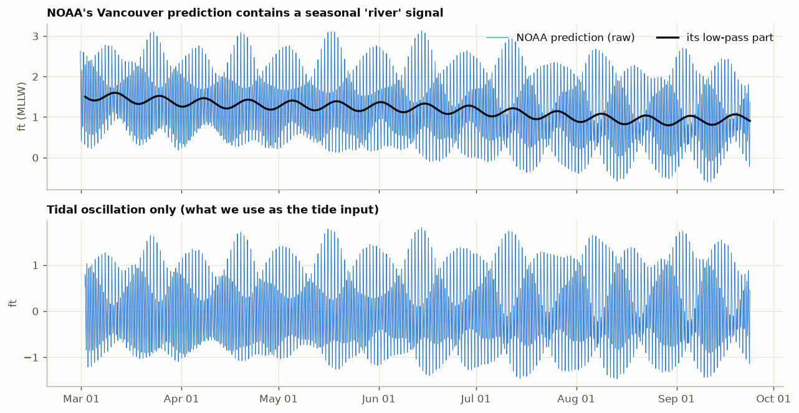
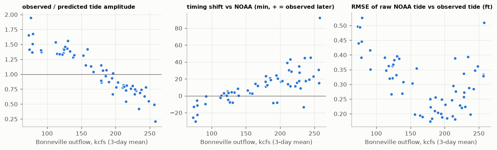
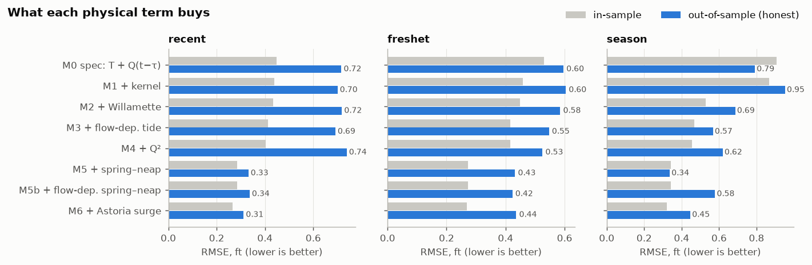
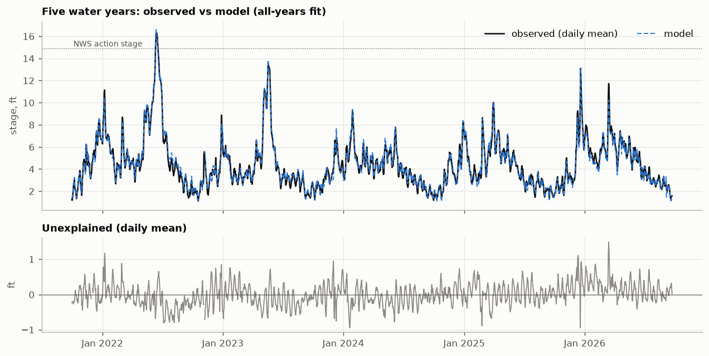
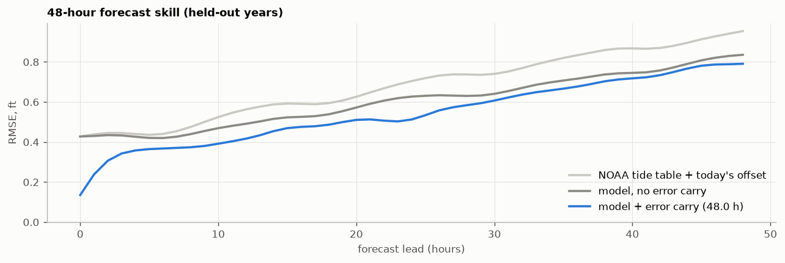
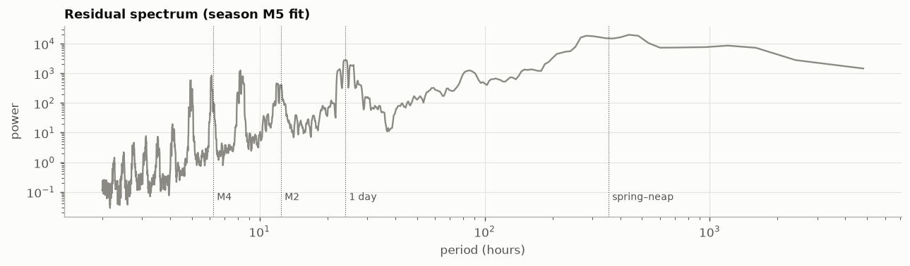

How River Brain works
The data, the physics and the five years of river history behind every number in the app, including what didn't work and what it still can't do.
1The question
The house floats on the Columbia at about river mile 106, directly across the channel from the U.S. Geological Survey's Vancouver gauge. That stretch of river is neither a plain river nor an estuary but both at once. It drains roughly a quarter-million square miles of the Northwest, yet it still rises and falls with the Pacific tide twice a day, more than a hundred miles from the ocean.
At any moment the water level is the sum of several things happening at once: the tide, releases from Bonneville Dam 40 miles upstream, backwater from the Willamette, rain-fed local streams, the fortnightly spring–neap cycle and weather at the coast. River Brain measures each one separately, adds them up, and shows the result next to what the gauge actually measured. Whatever doesn't add up is reported as unexplained rather than quietly assigned to something else.
2Where the data comes from
Everything comes from free, public, government or university sources. There are no paid services and no AI running at app time. Every hour an automated job pulls the latest of each:
| What | Source | How often | Used for |
|---|---|---|---|
| River level at Vancouver | USGS gauge 14144700 | every 15 min | the thing we explain |
| Tide predictions, Vancouver | NOAA CO-OPS 9440083 | every 6 min, 16 days ahead | the tide driver |
| Bonneville Dam outflow (total, spill, powerhouse) | U.S. Army Corps of Engineers (Dataquery, with CWMS as backup) | hourly | the dam driver |
| Willamette flow and water quality at Portland | USGS 14211720 | every 5–15 min | backwater driver; Chemistry tab |
| Sandy River flow | USGS 14142500 | every 15 min | local-streams driver |
| Astoria observed and predicted sea level | NOAA CO-OPS 9439040 | every 6 min | ocean (storm surge) driver |
| Official river forecast | NWS Northwest River Forecast Center (gauge VAPW1) | a few times a day | comparison and flood stages |
| Adult fish counts | Columbia River DART, University of Washington | daily | Fish tab |
Problems we hit, and how they're handled
Real data is messy. Every item here was found by testing against the live services, not assumed:
- USGS is replacing its data service. The long-standing one is being shut down in early 2027, so River Brain was built on the new Water Data API from day one. During development the new API moved from version 0 to version 1; the code uses version 1.
- USGS limits anonymous use to 1,000 requests an hour. Fitting five years of data hit that limit twice. The fitting job now waits out the limit and resumes from its saved copy of what it already downloaded.
- The Army Corps server has a certificate misconfiguration. It doesn't send the middle link of its security certificate chain, so strict software refuses to connect. Rather than switch security checks off, River Brain ships the missing public certificate (DigiCert) and verifies the connection properly.
- The Corps publishes Bonneville's flow through two systems. Where both have data they agree to the digit, but the newer one was missing 73 hours in June 2026. River Brain uses Dataquery first and fills any holes from the other.
- The Willamette at Portland flows backwards. Its 5-minute discharge goes negative on every flood tide. A 25-hour average gives the net downstream flow that actually matters.
- A “perfect” data series turned out to be unusable. USGS publishes a tide-filtered discharge for both rivers, which looked ideal, but it runs about 36 hours behind real time because the filter needs data from both sides of each moment. The app can't wait 36 hours, so it isn't used.
- NOAA's Vancouver “tide” isn't only tide. Its prediction includes an assumed average seasonal river, which falls about 0.8 ft from March to September. Used as-is, the river would be counted twice. River Brain strips that part out (section 4.1).
- DART lists a February 29th in every year (a 10-year-average row, even in non-leap years). It's dropped.
- The NWS only publishes its current forecast, not past ones, so nobody can check its track record after the fact. River Brain saves both forecasts, NWS's and its own, every hour from launch, so their accuracy can be compared over time.
- Three agencies, three different zeros. The USGS gauge reads 1.82 ft above the NGVD29 datum. The NWS gauge reads 0.13 ft higher than USGS (flood stages are on the NWS scale), and NOAA's tidal datum (MLLW) sits 1.69 ft below USGS. These offsets were measured against each other, and every number in the app is on the USGS gauge's scale.
3Checking the data
Dam telemetry is known to contain gaps and occasional bad values, so every hourly Bonneville value goes through four checks:
- Missing: the hour is absent, or the value is null.
- Impossible: below 10 or above 700 thousand cubic feet per second (kcfs). The dam's record is about 600 kcfs.
- Spike: more than 25 kcfs (or six robust standard deviations) away from the 7-hour running median. Real operational changes are steps, which a median follows; one-hour blips aren't.
- Stuck: the same value repeated for 8 or more hours, the signature of frozen telemetry.
Flagged values are removed; gaps of three hours or less are filled by straight-line interpolation, and longer gaps are left empty. To prove the checks work, the test suite injects each kind of fault (a zero dropout, a +60 kcfs spike, a 12-hour stuck value, a −999 sentinel, a 2-hour hole and a 10-hour hole) and confirms every one is caught and handled correctly.
Over five years of real data the checks flagged 19 hours as suspect spikes and found 3 missing hours; nothing was impossible or stuck. A typical spike was a two-hour dip from 198 to 158 kcfs and back. That could be a telemetry glitch, or real, such as a turbine unit tripping offline. It makes no practical difference: the model responds to a day-long average of the dam's flow, so a single odd hour barely registers.
4Six things that move the river
4.1 The tide, which the river reshapes
NOAA publishes tide predictions for Vancouver, made from harmonic analysis of decades of gauge records. They're the starting point, with two corrections.
First, remove the part that isn't tide. A Godin filter (three moving averages of 24, 24 and 25 hours, the standard way oceanographers separate tides from everything slower) splits NOAA's prediction into the tidal oscillation and a slow remainder. The remainder is NOAA's built-in assumption about the seasonal river, and it's discarded, because River Brain uses the actual river instead.

Second, correct for today's river. A big river flowing out resists the tide pushing in, so the tide that reaches Hayden Island depends on how much water is coming down. Comparing NOAA's predicted tide with the observed tide every three days through the 2026 season showed this clearly:

The model handles this by letting the tide's size and timing both vary with the last day's average Bonneville flow. Size is easy: multiply the tide by a number that depends on flow. Timing is subtler, and that's where a mathematical tool called the Hilbert transform comes in.
4.2 Bonneville Dam: forty miles and half a day
Bonneville's operators change its release hour by hour, following electricity demand (you can see weekday and weekend patterns) and fish-passage rules. A change at the dam doesn't arrive at Hayden Island all at once. It travels 40 miles and spreads out as it goes. The best fit across five years treats the river as responding to the average of the dam's release over the previous 24 hours, starting one hour back. The centre of that window is 12½ hours, which is the app's “changes take about 12½ hours to arrive.”
The response is also curved. At 80 kcfs, adding 10 kcfs raises Hayden Island about 0.22 ft; at 250 kcfs, about 0.29 ft; at 400 kcfs, about 0.36 ft. At low flow the ocean largely sets the level, while at high flow the river's own friction does.
Try it: find the travel time yourself
Loading a 30-day stretch of real data…
4.3 Willamette backwater
The Willamette enters about five miles downstream of Hayden Island, so its water never flows past the house, but it backs the Columbia up. The model finds about +0.28 ft for every extra 10 kcfs of Willamette flow. In winter the Willamette can top 150 kcfs, which makes this driver worth several feet on its own.
4.4 The Sandy River and local streams
The Sandy enters between Bonneville and Hayden Island, so its water isn't in the dam's numbers. It's rain-fed and flashy. Adding it cut the model's winter errors noticeably. Its coefficient is large for a small river (about +1 ft per 10 kcfs), which strongly suggests it's standing in for all the other rain-fed creeks that rise in the same storms (the Washougal and local runoff). The app labels this driver “Sandy River & local streams” for that reason.
4.5 Spring–neap setup: the tide raises the average level
This is the least intuitive driver, and in early testing it turned out to be the most important. Every ~14.8 days the tides swing between big spring tides (near new and full moon) and small neap tides. In a river, big tides don't just swing higher and lower: through friction they raise the average water level for days at a time. It's a known effect in the Columbia estuary, and NOAA's own harmonic analysis contains it (a constituent called MSf, visible as the fortnightly wobble in the figure in 4.1).
River Brain measures it from the size of the predicted tide, smoothed over a few days: each extra 0.1 ft of tidal amplitude raises the mean level about 0.23 ft. In the first round of testing, adding this single term cut the out-of-sample error roughly in half.
4.6 The ocean: storm surge at Astoria
Wind and low air pressure can hold the sea at Astoria a foot or more above its predicted tide for a day or two. River Brain measures that surge (observed minus predicted at Astoria, averaged over 25 hours) and finds that 1 ft of surge at Astoria raises Hayden Island about 0.75 ft. This term looked useless in summer-only testing and turned out to matter a lot once winter storms were in the data. That's a good illustration of why the final model was tested on full years.
5How the model was found
5.1 First, a feasibility study
The starting idea was simple: water level = tide + Bonneville (with some travel delay) + everything else. A Jupyter notebook tested it on 30 days of data, then on the whole 2026 season. It fit well in-sample but failed the honest test: fitted on the first two-thirds of a period and asked to predict the last third, it explained only 53–68% of the variation and missed by 0.6–0.8 ft. The travel time it found jumped between 8 and 17 hours depending on the period, a sign that it wasn't really being measured.
So the notebook built a ladder of models, adding one physically motivated term at a time and keeping score out-of-sample:

5.2 Then, five years and a fair contest
One season can fool you. The production model was fit on five complete water years, October 2021 to September 2026: 43,414 hours, stage from −0.6 to 16.5 ft, and Bonneville from 70 to 459 kcfs, including the June 2022 flood that pushed Hayden Island above the NWS action stage.
Two rules kept the process honest:
- Leave one year out. Each water year was predicted by a model whose coefficients and travel-time settings were chosen without seeing that year. Every error quoted here is on data the model hadn't seen.
- Decide how to choose before seeing the results. Nine candidate models (built from fourteen possible terms) competed under a rule written into the code beforehand: lowest cross-validated error, but if a simpler model is within 2%, take the simpler one. That stops the process from quietly favoring whatever looks best after the fact.
The contest (live)
Loading…
Adding every possible term scored about the same as the selected model, but it has three more terms, so by the pre-declared rule the simpler model won. Terms that were tried and rejected, because each helped by less than 1%:
- tidal distortion (“overtide”) terms;
- a second, fast Bonneville response;
- a curved Willamette effect;
- a spring–neap effect that varies with flow;
- a single fixed travel delay instead of a day-long average.
Negative results are results; they're recorded so nobody has to try them again blind.

5.3 The final model
It's ordinary least squares, the most transparent method there is, applied to terms that each mean something physical. Every coefficient is shown below with its meaning. (live)
What the coefficients say (live)
6Forecasting
The 48-hour forecast uses the same equation, run forward in time. The tide part is known ahead, because NOAA publishes predictions weeks out. The river parts are held at their latest values, which is honest: River Brain doesn't know what the dam will do tomorrow. Because Bonneville takes about half a day to arrive, the first half-day of the dam's effect is already on its way and is genuinely known.
One more piece: if the model is running 0.3 ft low right now, it will probably still be a bit low in a few hours. The forecast carries today's error forward and lets it fade; the best fade time, chosen by testing, was 48 hours.
To measure accuracy honestly, the forecast was replayed from every 12 hours through each held-out year (about 3,600 forecasts), each using only data that existed at that moment, and compared with what actually happened. The baseline is what anyone could do with a tide table: NOAA's prediction plus today's observed offset.

The shaded band on the Forecast tab is the range that held 90% of those replayed errors at each lead time. It's measured, not assumed. The NWS forecast is drawn alongside for comparison. NWS runs full hydraulic models of the whole river system with upstream forecasts that River Brain doesn't have, so over time the saved archive will show which does better, and when.
7How “why it moved” works
The model's absolute level for each driver needs a reference point (“0.4 ft of Willamette” relative to what?), but changes don't. Over any stretch of time, the change in the model equals the sum of the changes in its terms; the constant cancels. So the “why it moved” bars are exact bookkeeping: each bar is how much that driver's term changed, and the bars always add up to the observed change once the unexplained part is included.
Loading the latest example…
Typically about 80% of a 3–6-hour change is accounted for by named drivers, and about 20% ends up unexplained. That ratio is shown honestly each time rather than hidden.
8What it can't do (yet)
- Rising tides at low flow. In late summer the tide rises faster than it falls (flood–ebb asymmetry), and the model runs about 0.15 ft low on rising tides. The terms tried so far don't capture it across all flows; overtide terms that apply only at low flow are the next candidate.
- Travel time changes with flow (section 4.2), but the model uses one average response.
- “Sandy River” is a proxy for all rain-fed local streams, so its bar is really “local rain.”
- Coefficients are correlated. Bonneville, the Willamette and the seasons move together, so the overall fit is more trustworthy than any single coefficient. More years of data is the cure.
- Beyond the data it's extrapolating. The model has seen Bonneville up to 459 kcfs and Hayden Island up to 16.5 ft. A 1996-size flood would be outside that range, and the app says so when it happens.
- Tide timing at very high flow is poorly defined. The tide is so damped there (about a third of NOAA's prediction) that its timing hardly matters.
- All 2026 USGS data is provisional, and USGS may revise it after review.
- It is not a flood warning system. For flood decisions, use the National Weather Service.

9How it's built
A few engineering principles matter for trusting the numbers:
- One definition of every input. The same code builds the model's inputs when fitting, when replaying past forecasts and when running live, so they can't drift apart.
- No peeking at the future. Every river-flow input uses only data from before the moment it describes. An automated test proves it by rewriting the “future” and checking that nothing earlier changes. (Tide predictions are the one exception, legitimately, since they're published ahead.)
- Graceful failure. If a data source is down, the app keeps working and says which source is stale. If one is missing entirely, its driver is held at a typical value and shows no change, with a warning. If the whole hourly job fails, yesterday's site stays up.
- Human review of the model. A refit never goes live automatically. It opens a proposal with the full fit report for someone to read first.
- Tested. 17 automated tests run on every change. They check, for example, that the bars always add up, that a known equation is recovered from synthetic data, that the oxygen saturation formula matches the published APHA table, and that stale and missing data are handled.
- Free to run, forever. Public data, GitHub's free automation and hosting, and plain web files. There's no server to maintain and no subscription.
In all: about 3,600 lines of Python, JavaScript, HTML and CSS (including this guide), plus the 900-line feasibility notebook. The app draws its own charts with no charting library, so it's small and fast, and it follows the light/dark setting of the phone. Everything is open: the code, the notebook and the fit report are on GitHub.
10How it came together
- Verify every source. Each API was called live before any code was written, which is how the certificate problem, the backwards-flowing Willamette and the lagging “perfect” series were found.
- Feasibility study. The Jupyter notebook tested the tide + dam + residual idea, found where it failed, and built the model ladder that fixed it.
- Five-year fit. Fetching 2.23 million measurements (the USGS rate limit had to be waited out twice), holding a pre-declared contest between nine models, and replaying about 3,600 forecasts.
- Production pipeline. The hourly job, its quality checks, failure handling and tests, verified end to end against live data.
- This app and this guide, including the travel-time discovery in section 4.2, which turned up while this guide was being written.
11Glossary
- kcfs
- Thousand cubic feet per second. Bonneville typically releases 70–300 kcfs; 100 kcfs is about 750,000 gallons every second.
- Stage / gauge datum
- Water height relative to a gauge's fixed zero. Hayden Island numbers use the USGS Vancouver gauge's zero, 1.82 ft above the NGVD29 survey datum.
- River mile (RM)
- Distance upstream from the river's mouth.
- Spring and neap tides
- The biggest and smallest tides of the ~14.8-day cycle, set by the relative positions of the sun and moon. Nothing to do with the season spring.
- Freshet
- The spring snowmelt flood, typically May–June on the Columbia.
- Godin filter
- Three successive moving averages (24, 24 and 25 hours) that remove tides and keep slower changes. It's the standard tool for separating tidal from non-tidal water level.
- Hilbert transform
- Produces a copy of a wave shifted by a quarter-cycle; used here to let the model learn tide timing (section 4.1).
- Least squares
- Choosing coefficients that make the sum of squared prediction errors as small as possible.
- RMSE
- Root-mean-square error: a typical size of miss, in feet.
- R²
- The fraction of the variation in water level the model accounts for (1 would be perfect).
- Cross-validation / out-of-sample
- Testing a model on data it wasn't fitted to. The only honest measure of how it will do tomorrow.
- Hindcast
- Replaying a forecast from a past moment using only data available then, to measure accuracy.
- Band-pass filter
- Keeps only changes within a range of time scales (here 30 hours to 10 days), removing both tides and slow seasonal trends.
Credits
Data: U.S. Geological Survey; NOAA National Ocean Service (CO-OPS) and National Weather Service; U.S. Army Corps of Engineers, Northwestern Division; Columbia River DART, Columbia Basin Research, University of Washington. Built with Python, pandas, NumPy and matplotlib.
Made for Dad.